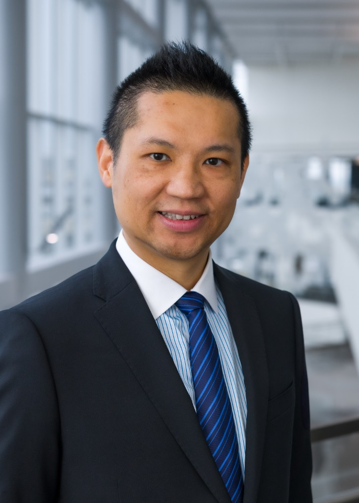
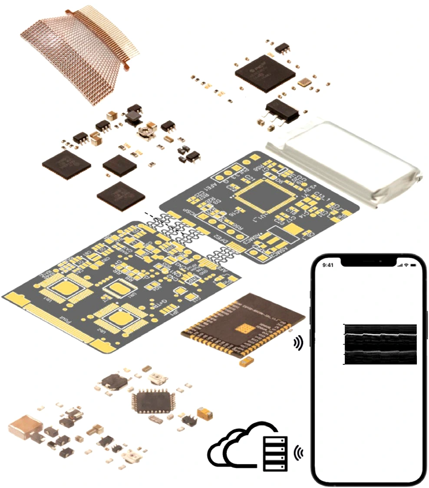

National Defense Medical University國防醫學大學
TriMED
LAB
Quantitative Medical Imaging & Rehabilitation Science定量醫學影像與復健科學

Yen-Sheng Lin, PhD
林彥聖
Lab Director實驗室主任
Scroll向下捲動
National Defense Medical University國防醫學大學
Quantitative Medical Imaging & Rehabilitation Science定量醫學影像與復健科學

Yen-Sheng Lin, PhD
林彥聖
Lab Director實驗室主任

We are the TriMED Laboratory at National Defense Medical University, dedicated to developing novel diagnostic and prognostic tools through quantitative ultrasound imaging, shear wave elastography, and artificial intelligence.我們是診療一體研究與智慧醫療實驗室（TriMED Laboratory），位於國防醫學大學，致力於開發結合定量超音波影像、剪力波彈性成像及人工智慧之創新診斷與預後工具。
Our work bridges biomedical science with clinical rehabilitation — translating cutting-edge imaging technology into precision medicine for patients with shoulder disorders, spinal cord injury, and neuromusculoskeletal conditions.我們的工作結合生物醫學科學與臨床復健，將尖端影像技術轉化為精準醫療，服務肩部疾患、脊髓損傷及神經肌肉骨骼疾病患者。
Team leader for SonoMedic, an AI-guided bedside ultrasound platform for musculoskeletal and sarcopenia assessment, in the Incubation Track of the TWmedica Medical Startup Accelerator (Industrial Technology Research Institute, MacKay Memorial Hospital, and Tri-Service General Hospital). Finals are November 2, 2026.帶領 SonoMedic 團隊入圍台灣醫＋加速器孵化育成組決賽。SonoMedic 為床邊超音波人工智慧平台，用於肌肉骨骼與肌少症評估；主辦單位為工研院、馬偕紀念醫院與三軍總醫院。決賽日期為 2026 年 11 月 2 日。
Presented "Together in Precision Rehabilitation: From Early Detection to Functional Restoration" at the AI in Medicine Symposium, Catholic University of Korea, Seoul (October 16). Also spoke at the NDMU neuromusculoskeletal symposium (October 3) and the TSMISS/TSESS Autumn International Symposium in Taoyuan (August 29).於韓國天主教大學人工智慧醫學研討會（首爾，10 月 16 日）發表「精準復健：從早期偵測到功能恢復」。並於國防醫學大學神經肌肉骨骼整合研討會（10 月 3 日）及 TSMISS／TSESS 秋季國際研討會（桃園，8 月 29 日）受邀演講。
"Beyond Corticosteroids: Ultrasound-Guided Regenerative and Hydrodissection Therapies for Adhesive Capsulitis" (Chang, Lin, Chen, and Chou), Life, 2026.「類固醇之外：超音波導引再生與水分離療法治療沾黏性關節囊炎」（Chang、Lin、Chen、Chou），Life，2026。
PI — "Super Intelligence Rehabilitation Medicine: Dallas Clinical Translation, Combat-Injury Rehabilitation, and the Taiwan–U.S. Youth Academic Forum." Youth Development Administration, Ministry of Education (NT$8,304,900; program October 17–November 4, 2027).計畫主持人——「超智能復健醫學：達拉斯臨床轉譯、戰傷復健與臺美青年學術論壇」。教育部青年發展署青年海外圓夢計畫・海外展翅軌（新臺幣 8,304,900 元；活動期間 2027 年 10 月 17 日至 11 月 4 日）。
Co-PI — a multimodal predictive model for sarcopenia in older adults, combining ultrasound elastography, biomarkers, and electronic medical records. Tri-Service General Hospital Medical Research and Development Program (2027).共同主持人——結合超音波彈性成像、生物標記與電子病歷，發展高齡肌少症多模態預測模式。三軍總醫院醫學研究發展計畫（2027）。
Designed and taught "Artificial Intelligence for Medical Imaging Radiomics: Analyses and Applications" (3 credits) at the Graduate Institute of Medical Sciences, with 16 doctoral students and 17 faculty and clinician auditors from nine clinical departments.於醫學科學研究所開設並授課「人工智慧醫學影像組學：分析與應用」（3 學分）。修課博士生 16 人，另有來自九個臨床科部的師資與醫師旁聽 17 人。
Appointed Topic Chair for Shoulder and Elbow of the Orthopaedic Research Society, and moderator of Clinical Research Methods at the ORS Scientific Program.獲任骨科研究學會（ORS）肩肘主題主席，並主持 ORS 科學議程「臨床研究方法」場次。
Honorable Mention for a podium presentation at the 16th Joint Teaching and Research Symposium of Graduate Institutes of Clinical Medicine and the 1st International Academic Conference of Mackay Medical College (June 27).於第 16 屆臨床醫學研究所聯合教學研究研討會暨馬偕醫學院第一屆國際學術研討會（6 月 27 日）獲得再生醫學口頭報告傑出獎。
Trainee-led systematic review and meta-analysis of regenerative medicine interventions for spinal cord injury, presented at the Orthopaedic Research Society Annual Meeting, Charlotte, NC (March 27–31).學員主導之脊髓損傷再生醫學介入系統性回顧與統合分析，發表於骨科研究學會年會（美國夏洛特，3 月 27–31 日）。
"Quantitative Assessments of Ultrasound-Based Rotator Cuff Muscle Quality" (PM&R) and "Effects of Resistance Exercises on Rotator Cuff Muscle Mechanical Characteristics" (PLOS ONE).「基於超音波之旋轉袖肌肉品質定量評估」(PM&R) 與「阻力運動對旋轉袖肌肉力學特性之影響」(PLOS ONE)。
Earned NVIDIA Deep Learning Institute certification in "Building Agentic AI Applications with LLMs" and ACUE Certificate in Effective Teaching Practice Framework.取得 NVIDIA 深度學習學院「建構 LLM 代理式 AI 應用」認證及有效教學實踐認證。
Received International Young Visiting Scholar award from the University Academic Alliance in Taiwan.獲大學學術聯盟國際青年訪問學者獎。
PI — "Novel Shoulder Muscle Quality Measures to Guide Just-in-time Perioperative Strategies of Reverse Shoulder Arthroplasty," Trauma Research & Combat Casualty Care Collaborative (2025–2027).PI —「肩部肌肉品質用於反向肩關節置換術術中策略」，創傷研究與戰傷護理協作計畫 (2025–2027)。
Co-PI — "Impact of Sarcopenia on Adjacent Segment Disease after Lumbar Spine Fusion Surgery," University of Texas System and University Academic Alliance in Taiwan (2025–2027).共同主持人——「肌少症對腰椎融合術後鄰近節段病變之影響」，德州大學系統與台灣大學學術聯盟國際合作計畫 (2025–2027)。
Presented "Altered Supraspinatus Muscle Stiffness Following Shoulder Exercises Among Individuals with Rotator Cuff Tears" at ORS Annual Meeting, Phoenix, AZ.於 ORS 年會發表「旋轉袖撕裂者肩部運動後岡上肌剛度變化」。
Earned Project Management Professional (PMP) certification from Project Management Institute.取得國際專案管理師 (PMP) 認證。
Laboratory totals. Research funding, postdoctoral training awards, and New Taiwan dollar awards are listed separately. Journal articles are counted apart from conference proceedings and include trainee-led papers.實驗室合計。研究經費、博士後培訓獎助與新臺幣獎助分開列出。同儕審查期刊論文與會議論文分開計算，並包含學員第一作者論文。
Combining scientific principles with clinical insights to advance rehabilitation science and technology結合科學原理與臨床洞察，推動復健科學與技術發展
Developing ultrasound-based imaging techniques and radiomics for characterizing musculoskeletal tissue properties and early disease detection.開發基於超音波的影像技術與影像組學，用於表徵肌肉骨骼組織特性及早期疾病偵測。
Analyzing wheelchair mobility, upper limb function, and transfer techniques to optimize rehabilitation outcomes for spinal cord injury.分析輪椅行動能力、上肢功能及轉位技術，以優化脊髓損傷患者之復健成果。
Investigating neuromusculoskeletal mechanisms and developing early interventional paradigms to prevent secondary complications.研究神經肌肉骨骼機制，發展早期介入模式以預防次併發症。
Applying machine learning and deep learning to develop predictive models for musculoskeletal screening and clinical decision support.應用機器學習與深度學習，建立肌肉骨骼篩檢預測模型與臨床決策支援系統。
We welcome a motivated student, intern, postdoctoral associate, research engineer, or clinical research coordinator.我們歡迎有熱忱的學生、實習生、博士後研究員、研究工程師或臨床研究協調員加入。
Interested? Send your CV and research interests to有興趣？請將您的履歷與研究興趣寄至
yslin@mail.ndmutsgh.edu.twYour support helps advance rehabilitation research and improve the lives of individuals with neuromusculoskeletal disorders.您的支持將協助推動復健研究，改善神經肌肉骨骼疾患患者的生活。
Donations are tax-deductible. For international donors, please contact us for wire transfer details.捐款可抵稅。國際捐款者請聯繫我們取得匯款資訊。
Graduate Institute of Medical Sciences
National Defense Medical University
No. 161, Sec. 6, Minquan E. Rd., Neihu District
Taipei 114201, Taiwan醫學科學研究所
國防醫學大學
台北市內湖區民權東路六段161號
台北 114201，台灣
(02) 8792-3100 ext. 18635